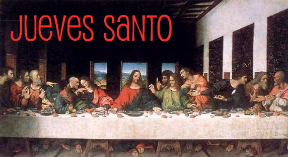
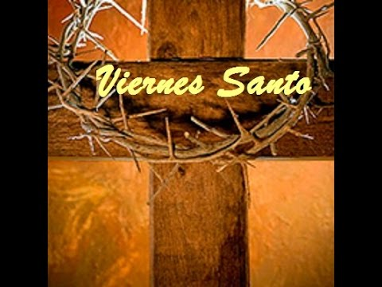
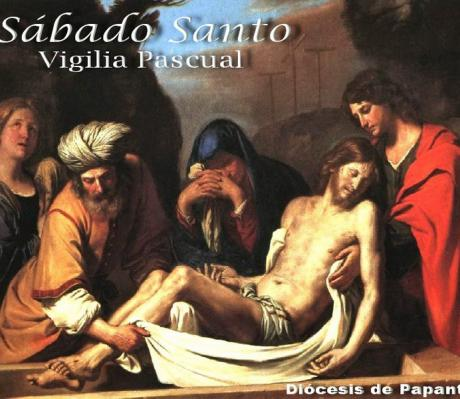
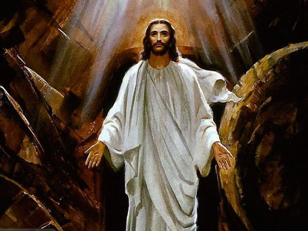

Semana Santa, conocida como semana mayor, es un período de 7 días que comienza con el domingo de Ramos y culmina con el Domingo de Resurrección. Con la Semana Santa, el cristiano conmemora el Triduo Pascual, es decir, los momentos de la Pasión, la Muerte y la Resurrección de Jesucristo.
La Semana Santa está precedida por la Cuaresma que se refiere al tiempo de preparación donde se recuerda los 40 días de Jesucristo en el desierto.
Dar clic para mas informacion
Jueves Santo
Como tal, el Jueves Santo celebra la última cena de Jesús de Nazaret con sus discípulos, la institución de la eucaristía, la orden sacerdotal y, el lavatorio de pies. En este día, los católicos realizan la visita de los siete templos o iglesias, con el objetivo de agradecer a Dios el don de la eucaristía y sacerdocio.

Viernes Santo
El Viernes Santo, recuerda la Pasión de Cristo, momento de su crucifixión en el Calvario, por salvar al hombre del pecado y darle vida entera. Se celebra con un viacrucis y con la adoración de la Cruz.

Sábado Santo
Se conoce como sábado Santo el día entre la muerte y la resurrección de Jesús. En este día, se lleva a cabo una vigilia pascual, en la cual se acostumbra bendecir el agua y encender las velas en señal de la Resurrección de Jesús.

Domingo Santo
El Domingo Santo, conocido como Domingo de Pascua. En el Domingo Santo, se conmemora la resurrección de Jesucristo al tercer día después de su crucifixión y, su primera aparición a los discípulos. Este día es de suma alegría para los fieles y, es interpretado como la esperanza de una nueva vida.
Domingo de Ramos es el último día de la Cuaresma y el primer día de Semana Santa. En el Domingo de Ramos, los cristianos conmemoran la entrada de Jesús en Jerusalén, montado en un asno, aclamado como hijo de Dios, días antes de su pasión, muerte y resurrección.
